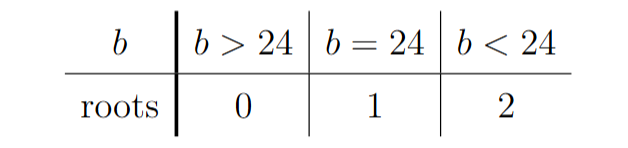
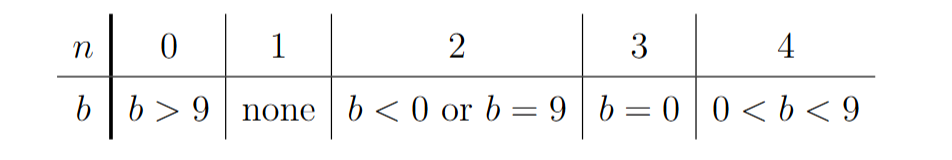

(i)
\[y=x^4-6x^2+9=(x^2-3)^2\]
\[\frac{dy}{dx}=4x^3-12x=4x(x^2-3)\]
\[\frac{dy}{dx}=0\implies x=0,\ \pm\sqrt3\]
\[y(0)=9,\qquad y(\pm\sqrt3)=0\]
Stationary points are
\[(-\sqrt3,0),\quad (0,9),\quad (\sqrt3,0)\]

\[x^4-6x^2+b=0\iff x^4-6x^2=-b\]
\[x^4-6x^2=(x^2-3)^2-9\]

(ii)
\[\frac{dy}{dx}=4x^3-12x+a,\qquad \frac{d^2y}{dx^2}=12x^2-12\]
\[\frac{d^2y}{dx^2}=0\implies x=\pm1\]
When \(x=1\),
\[4-12+a=0\implies a=8\]
When \(x=-1\),
\[-4+12+a=0\implies a=-8\]
\[a=\pm8\]
When \(a=8\),
\[y=x^4-6x^2+8x+b,\qquad \frac{dy}{dx}=4(x-1)^2(x+2)\]
Minimum point has \(x=-2\),
\[y(-2)=16-24-16+b=b-24\]
When \(a=-8\),
\[x^4-6x^2-8x+b=x^4-6x^2+8x+b\quad\text{with }x\text{ replaced by }-x\]

(iii)
\[y=x^4-6x^2+ax,\qquad a>8\]
\[\frac{dy}{dx}=4x^3-12x+a\]
Let \(\displaystyle g(x)=4x^3-12x+a\)
\[g'(x)=12x^2-12\]
\[g(-1)=a+8>0,\qquad g(1)=a-8>0\]
\[g(-2)=a-8>0,\qquad \lim_{x\to-\infty}g(x)=-\infty\]
There is one stationary point at \(x=\alpha\), where \(\alpha<-2\)
\[4\alpha^3-12\alpha+a=0\]
\[a=12\alpha-4\alpha^3\]
\[
y(\alpha)=\alpha^4-6\alpha^2+a\alpha
=3\alpha^2(2-\alpha^2)<0
\]
\[y=x(x^3-6x+a)\]
Let \(\beta\) be the negative root of \(\displaystyle x^3-6x+a=0\)
\[\beta<\alpha<-2,\qquad y=0\text{ at }x=\beta,0\]